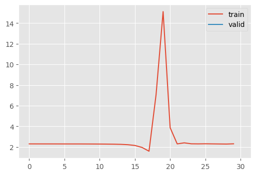
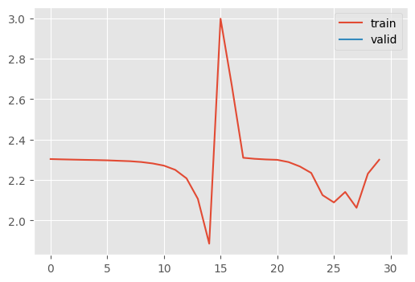
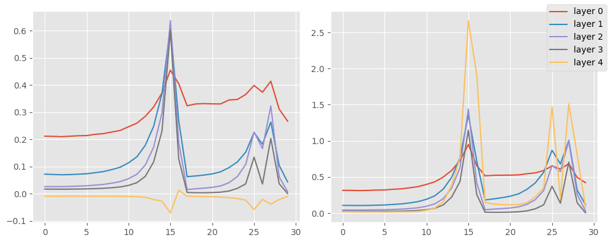
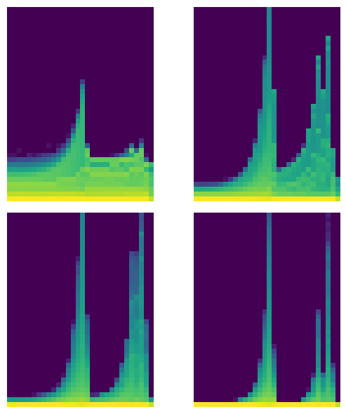

set_seed(42)
plt.style.use("ggplot")Activation Statistics
Exploring what we can learn by closely inspecting the model internal distributions
Adapted from:
We need to have a way of looking inside models and diagnosing issues.
set_seed
set_seed (seed, deterministic=False)
Baseline
Let’s look at a fashion MNIST classification problem.
Conv2dWithReLU
Conv2dWithReLU (*args, nonlinearity=<function relu>, stride:Union[int,Tuple[int,int]]=1, padding:Union[str,int,Tuple[int,int]]=0, dilation:Union[int,Tuple[int,int]]=1, groups:int=1, bias:bool=True, padding_mode:str='zeros', device=None, dtype=None)
Convolutional neural network with a built in activation
CNN
CNN ()
Six layer convolutional neural network
Generally, we want a high learning rate to come up with generalizable algorithms. Let’s start with the relatively high 0.6.
def train(model, extra_cbs=None):
cbs = [
MetricsCB(MulticlassAccuracy(num_classes=10)),
DeviceCB(),
ProgressCB(plot=True),
]
if extra_cbs:
cbs.extend(extra_cbs)
learn = TrainLearner(
model,
fashion_mnist(),
F.cross_entropy,
lr=0.6,
cbs=cbs,
).fit()
return learn
train(model=CNN())| MulticlassAccuracy | loss | epoch | train |
|---|---|---|---|
| 0.161 | 2.911 | 0 | train |
| 0.100 | 2.305 | 0 | eval |

Let’s look at the underlying activations
Hooks
Jeremy’s implementation is kind of a mess so I did a bit of refactoring. Hooks are just another kind of callback in the PyTorch universe, so we can adopt our Callback conventions.
Hook
Hook (m, f)
Wrapper for a PyTorch hook, facilitating adding instance state
HooksCallback
HooksCallback (hook_f, mods=None, mod_filter=<function noop>, on_train=True, on_valid=False)
Container for hooks with clean up and and options to target certain modules
That being implemented, we can subclass these for adding hook behaviors.
StoreModuleStats
StoreModuleStats (m, on_train=True, on_valid=False)
A hook for storing the activation statistics
StoreModuleStatsCB
StoreModuleStatsCB (mods=None, mod_filter=<function noop>, on_train=True, on_valid=False)
Callback for plotting the layer-wise activation statistics
Now, we can rerun while keeping track of the activation stats
model = CNN()
cb = StoreModuleStatsCB(mods=model.layers)
train(model=model, extra_cbs=[cb])
cb.mean_std_plot()| MulticlassAccuracy | loss | epoch | train |
|---|---|---|---|
| 0.165 | 2.277 | 0 | train |
| 0.284 | 2.161 | 0 | eval |


cb.hist_plot()
Jeremy makes the point that his network isn’t training because the weights are close to 0, which makes them “dead units.”
⚠️ Generally, the mean should be 0 and the standard deviation should be close to 1.
Ultimately, Jeremy recommends simply abandoning any training run where the activation variance increases and crashes.